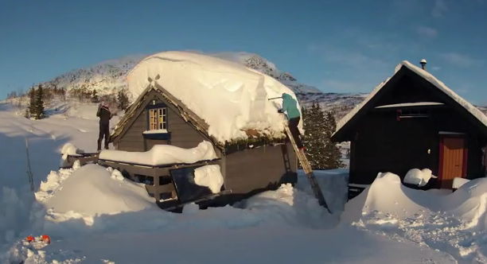

Timelapse: Getting snow off roof

It's winter. And luckily we have snow.

This is a short video of me, Kjartan and Rannveig at our cabin at Olastøl in Granvin, Hardanger, Norway - on January 20th, 2012. We have had lots of snow this winter, several meters deep, weighing the roofs down - until we got to work, that is. We also got to enjoy the snow with our skis on, but that was not documented this time. It's only January so far, so here's hoping for more snow.
The pictures are taken with a GoPro HD Hero2 camera, with a resolution of 3840x2880, and then cropped to 1080p in Adobe Premiere Pro. Each photo is shown for about 0,2 seconds, with no transitions.
Music credits go to Fluke - Bermuda (from the album Risotto, 1997). Spotify-link.
Timelapse: Olastøl 1080p @YouTube
Timelapse: Olastøl 1080p @Vimeo